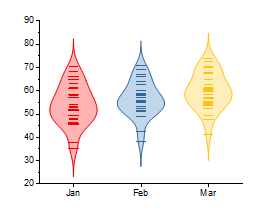
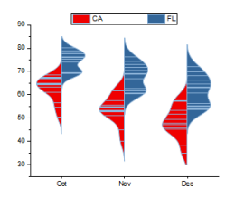
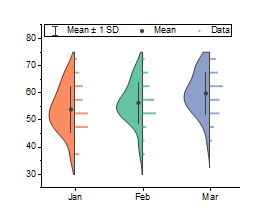
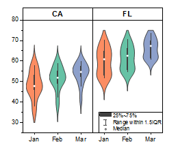

Origin unterstützt sieben Violindiagrammvorlagen. Sie können diese Violindiagrammtypen direkt über das Menü erstellen.
Um ein Violindiagramm zu erstellen:
Jede Y-Datenspalte wird in einem separaten Violindiagramm dargestellt. Die Spaltennamen und Beschriftungen liefern die Hilfsstrichsbeschriftungen der X-Achse.
Um das Violindiagramm benutzerdefiniert anzupassen:
oder
Beide Aktionen öffnen den Dialog Details Zeichnung. Dabei ist auf der linken Seite des Dialogs das Diagrammsymbol für das Violindiagramm aktiv. Die Bedienelemente des Violindiagramms sind auf der rechten Seite des Dialogs über die Registerkarten verfügbar.
Informationen zu weiteren Anpassungen von Boxdiagrammen finden Sie unter den folgenden Themen:
Unten werden mehrere Boxdiagramme angezeigt. Alle Beispiele wurden aus den Daten in der Datei Violin Plots - Horizontal Split Violin erstellt, die Sie unter ‘Hilfe: Lernzentrum: GDiagrammbeispiel’ finden. Die Tabelle verweist auf Datensätze (Spalten) im Arbeitsblatt US Mean Temperature und listet Anpassungen auf, die im Dialog Details Zeichnung gemacht wurden.
|  |
Gezeichnet aus Col(D) bis Col(F) Menüeintrag |
Registerkarte Verteilung:
|
|  |
Gezeichnet aus Col(M) bis Col(P) Menüeintrag: |
Registerkarte Boxdiagramm:
|
|  |
Gezeichnet aus Col(D) bis Col(F) Menüeintrag: |
Registerkarte Boxdiagramm:
|
|  |
Gezeichnet aus Col(D) bis Col(F) Menüeintrag |
Registerkarte Feld:
|